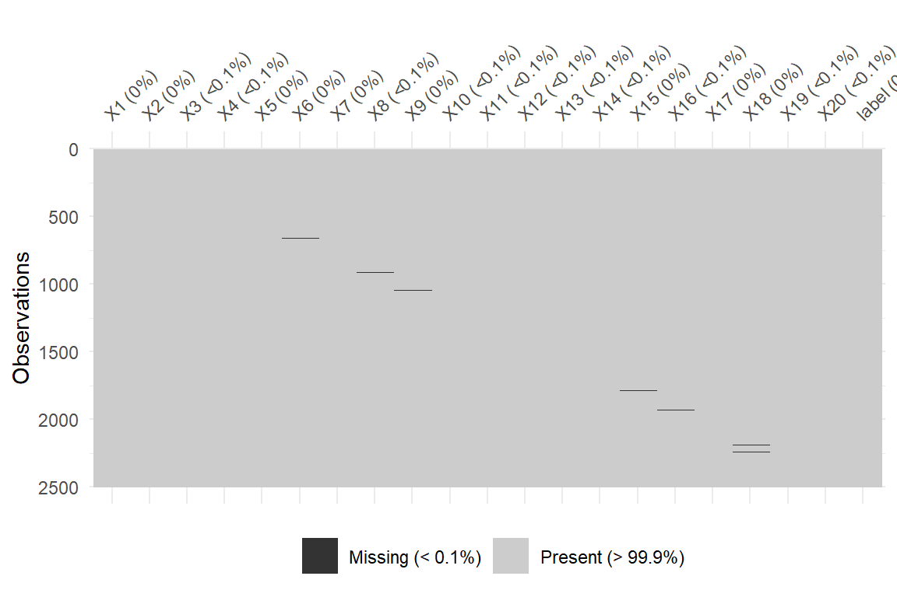
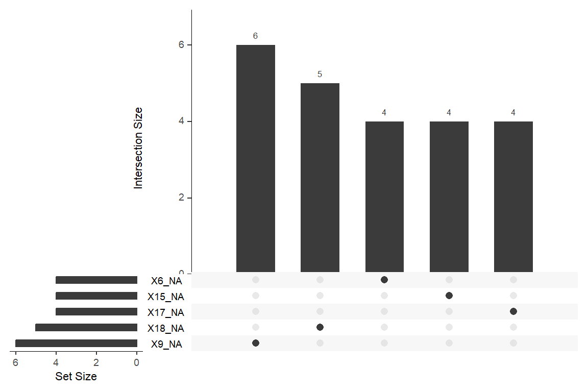
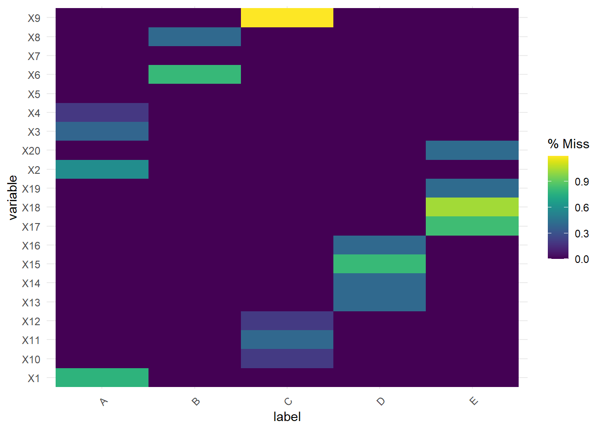

Chemical Sample Classification Report
Data Preparation
Data
The supplied dataset contains 2500 measurements of 20 numerical variables.
The analysis team and report writer did not have any contextual information about the data, e.g.:
- what has been measured
- variable importance, interactions
- measurement scale, units, reliability
Therefore, variables are treated equally and without bias in the analysis and modelling. Decisions are made on statistical grounds and stated assumptions.
Tip
Additional domain-specific information about the data could result in alternative modelling decisions and outcomes and should be considered by the client.
Missing data
Before proceeding with Exploratory Data Analysis, it is important to explore the extent of missing data and whether there are patterns to the missingness. Some classification models assume no missing data, and depending on the amount, prevalence and patterning of missing data, different assumptions and techniques can be applied.
We investigate missingness to see whether the assumption that missing data is ‘missing at random’ (MAR) holds - that is, is the probability of missingness only dependent on observed variables? If so and there is a significant amount of missing data (>5%), multiple imputation approaches may be explored to impute missing values by estimation through statistical inference.
The sample has 49 rows with at least one missing value, which is 0.09% of the entire dataset. As there are fewer missing values than the 5% threshold, imputation is not required and removing these rows is acceptable.
If the missing data is not MAR - that is, it appears to depend on unobserved variables, there may be other, more appropriate imputation methods such as maximum likelihood imputation. Unobserved influences in this scenario may include the sample purity/quality, sample handling/measuring differences, measurement/equipment discrepancies or chemical compositions of the samples.
Imputation can introduce bias into the analysis if the assumptions of the imputation method are violated, or the imputed values differ significantly from true missing values.
Caution
The client should consider missingness in their data:
- Are there any concerns regarding missing data?
- Is the equipment, staff, technique, facilities, chemicals, etc. consistent?
- What are the reasons for missing data? Can they be mitigated?
- Can data be collected where it has been identified as missing?
- Is there likely to be (more, less, similar amount of) missing data in the future?
Missing value details by class and variable
This dataset has 18 variables with missing data. The five variables with the most missing data are:
Variable | Count | Percentage |
|---|---|---|
X9 | 6 | 0.24 |
X18 | 5 | 0.20 |
X1 | 4 | 0.16 |
X6 | 4 | 0.16 |
X15 | 4 | 0.16 |
Variable X9 has the most missing values with 6, accounting for 0.24% of this variable’s data.
No single sample (observation) has more than 1 missing values. This means that, at most, a sample is missing 4.76% of its data.
The upset plot below shows the five variables with the most missing values and confirms that there are no instances where there are missing values in two variables in the same observations.

If we group missing data by the target label, we see that E has the most missing data at 0.52%.
Label | Count | Percentage |
|---|---|---|
A | 10 | 0.40 |
B | 6 | 0.24 |
C | 10 | 0.40 |
D | 10 | 0.40 |
E | 13 | 0.52 |
Patterns of missingness begin to emerge when examining missing data for variables, grouping by ‘labels’. It seems that there is a relationship between missing values for sequential variables when grouping observations. This is clearly visible in the heatmap below as well as in the stepped pattern in Figure 1 above.

It is important to note that the target variable (‘label’) has no missing values.
Warning
Is there anything systemic, in terms of missingness:
- X1-X4 is only missing for label A
- X6, X8 are only missing for label B
- X9-X12 is only missing for label C
- X13-X16 are only missing for label D
- X17-X19 are only missing for label E
Is there a relationship between the variables, in terms of what they measure?
Decision
Given the minimal amount of missing data - it will be removed before exploratory data analysis, data splitting and modelling.
If this dataset is representative, the missing data may not be an issue in the future - assuming the pattern identified above is understood.
Splitting data
Before proceeding with additional exploratory analysis, we split the dataset into three random subsets:
train- used to train the classification model to learn the relationship between the variables and the labelvalidation- used to validate the performance of the trained model(s) and to tune any hyperparameters; determines how well the model generalises to ‘unseen’ datatest- used to evaluate the final performance of the model post training and tuning; this data is only used once and kept separate.
In order to not introduce bias into the modelling process, the data will be split prior to any EDA, where the dataset is explored and summarised. Any insights or observations made during EDA will emerge solely from the training subset.
The only thing we check in advance is the target variable balance - that is the split across labels. Given that it is not perfectly balanced, the data subsets will be split with ‘stratification’ ensuring that each partition has a representative proportion of each class.
label | Frequency | Percent |
|---|---|---|
A | 508 | 20.73 |
B | 492 | 20.07 |
C | 492 | 20.07 |
D | 487 | 19.87 |
E | 472 | 19.26 |
Decision
The clean dataset is sufficiently large to split:
train- 50%validation- 25%test- 25%